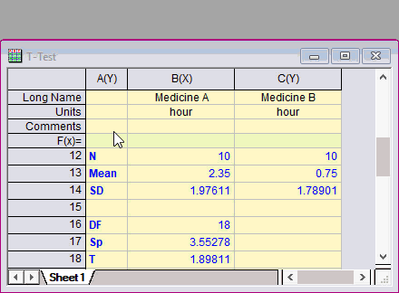

Show-Cell-Formula
最終更新日：2020/2/16
ワークシートセルに式を入力すると、そのセルには計算結果の値が表示されます。以前のバージョンでは、セル内部をダブルクリックして編集モードにすると式が表示されます。Origin 2020b以降は、ワークシート左上隅をクリックして表示されるミニツールバーの式を表示ボタンをクリックすると表示されます。

キーワード:セル式, 式を表示